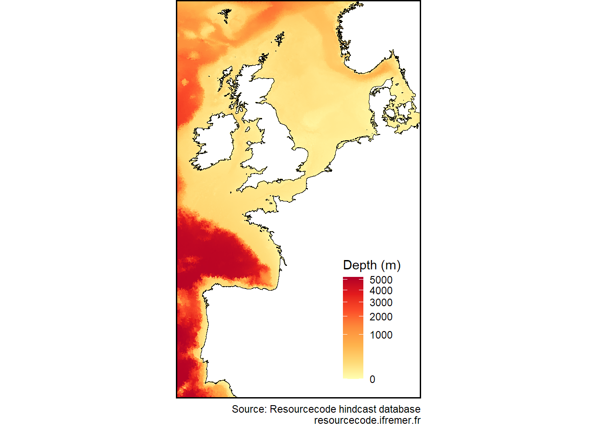
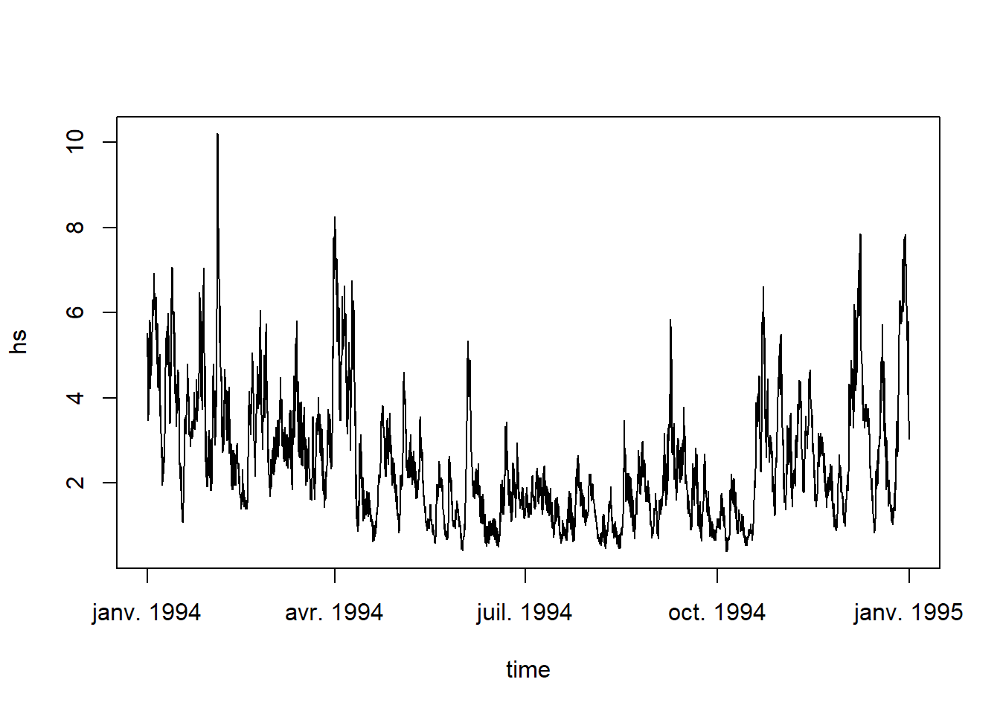

The goal of resourcecode is to provide an easy access to the Resourcecode hindcast database of sea-states. More information on the database can be found here. This website only contains information about the way to retrieve data from this data base and the functionalities offred by this package.
Installation
The package is not yet on CRAN. Meanwhile, you can install the development version of resourcecode like so:
devtools::install_github('Resourcecode-project/r-resourcecode')Examples
Plot the bathymetry used in the project
library(resourcecode)
resourcecode::rscd_mapplot(resourcecode::rscd_field$depth)
See the variables available in the database:
rscd_variables
#> # A tibble: 88 × 3
#> name longname unit
#> <chr> <chr> <chr>
#> 1 longitude longitude "degree_east"
#> 2 latitude latitude "degree_north"
#> 3 tri tri ""
#> 4 MAPSTA status map "1"
#> 5 dpt depth "m"
#> 6 ucur eastward current "m s-1"
#> 7 vcur northward current "m s-1"
#> 8 uwnd eastward_wind "m s-1"
#> 9 vwnd northward_wind "m s-1"
#> 10 wlv sea surface height above sea level "m"
#> # ℹ 78 more rowsDownload a time series of significant wave height next to the coast of Finistère:
data = get_parameters(node="134865",parameters = "hs")
str(data)
#> tibble [8,760 × 2] (S3: tbl_df/tbl/data.frame)
#> $ time: POSIXct[1:8760], format: "1994-01-01 01:00:00" "1994-01-01 02:00:00" ...
#> $ hs : num [1:8760] 4.98 5.19 5.37 5.48 5.52 ...
#> - attr(*, "node")= num 134864
plot(data,type='l')